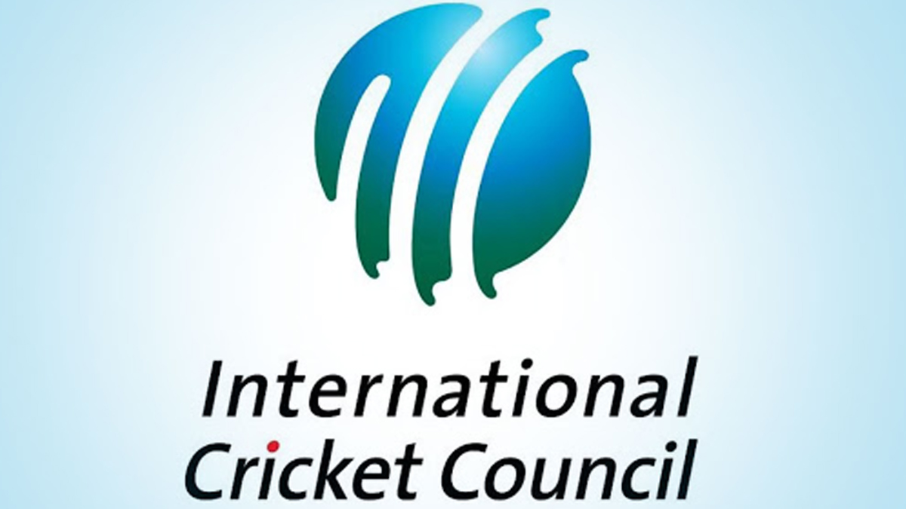

Home Page
- 


Introduction to Cricket: A Global Sport
Cricket is a bat-and-ball game that is popular in many parts of the world, especially in countries like India, Pakistan, Australia, and England. The game is played by two teams of eleven players each, with each team taking turns to bat and bowl. The objective of the game is to score more runs than the opposing team.
The game is played on a circular or oval-shaped field, which is typically made of grass. At the center of the field is a rectangular strip of land known as the pitch, where the bowler delivers the ball to the batsman.
Each team has two innings, during which they take turns to bat and bowl. The team that is batting tries to score as many runs as possible, while the team that is bowling tries to take wickets and restrict the scoring.
A run is scored when the batsman hits the ball and runs to the other end of the pitch before the ball is returned to the fielding team. If the ball is hit beyond the boundary of the field, the batsman is awarded four runs. If the ball is hit over the boundary without bouncing, the batsman is awarded six runs.
The game of cricket has many different formats, including Test cricket, One Day International (ODI) cricket, and Twenty20 cricket. Test cricket is played over five days, while ODI cricket and T20 cricket are shorter formats of the game.
Cricket is played across the globe, with the International Cricket Council (ICC) being the governing body for the sport. The game is particularly popular in countries like India, Pakistan, Sri Lanka, Bangladesh, Australia, England, South Africa, and the West Indies.